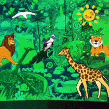

Animal Kingdom

Animals (also called Metazoa) are multicellular, eukaryotic organisms in the biological kingdom Animalia. With few exceptions, animals consume organic material, breathe oxygen, are able to move, can reproduce sexually, and go through an ontogenetic stage in which their body consists of a hollow sphere of cells, the blastula, during embryonic development. Over 1.5 million living animal species have been described—of which around 1 million are insects—but it has been estimated there are over 7 million animal species in total. Animals range in length from 8.5 micrometres (0.00033 in) to 33.6 metres (110 ft). They have complex interactions with each other and their environments, forming intricate food webs. The scientific study of animals is known as zoology.
Animals have 6 groups. They are known as :
- Mammals
- Reptiles
- Amphibians
- Insects
- Birds
- Fish
- Arthropods
Mammals
Mammals have 4 legs, fur, and gives birth. They also can't fly except for bats. They also can't swim except for whales who lives underwater has fins. Another unique mammal is a porcupine who uses their sharp spikes as sell defense. Other examples of mammals are girrafes, cats, dogs, deers, elephants and etc.
Reptiles
Reptiles usually have scales, 4 legs or no legs, and lays eggs. Some reptiles such as turtles can swim and has a shell used for self-defense and home. Other examples of reptiles are snakes, lizards, crocodiles, etc.
Amphibians
Amphibians can live on both land and water as they use their gills in water and lungs on land and lays eggs. Amphibians such as frogs will grow with tails and lose them when growing up, also producing their legs. Other types of amphibians are caecilians, toads, newts and etc.
Insects
Insects are 6-legged animals with a body divided into 3 parts which are the abdomen, head and thorax and lays eggs. The head at its front, the abdomen at its behind and the thorax at its middle. Some insects such as flies, mosquitoes and bees have wings eventhough it doesnt at its young state. Other types of insects are butterflies, houseflies, fleas, ticks and etc.
Birds
Birds are 2-legged animals with feathers and feathery wings used to fly and lays eggs. Some birds such as emus, penguins, peacocks, chickens can hardly fly. They can sometimes fly for a few seconds and land. Others types of birds are finches, pigeons, doves, parrot, etc.
Fish
Fishes lays eggs underwater and have fins which allow them to swim arround and have gills which allows them to breathe dissolved oxygen underwater. Mudskippers are a type of fish that can live on both land and water. An agler fish is a type of fish that lives deep underwater and has a body part that works as its own light to see through the darkness. Other types of fish are seahorses, carp, eel and etc.
Arthropods
Arthropods are the types of animals who are usually mistaken for other kinds of animals. Such as spiders and scorpions who are usually mistaken as insects. Other types of arthropods are crabs, milipedes, centipedes and etc.